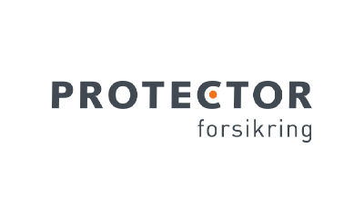
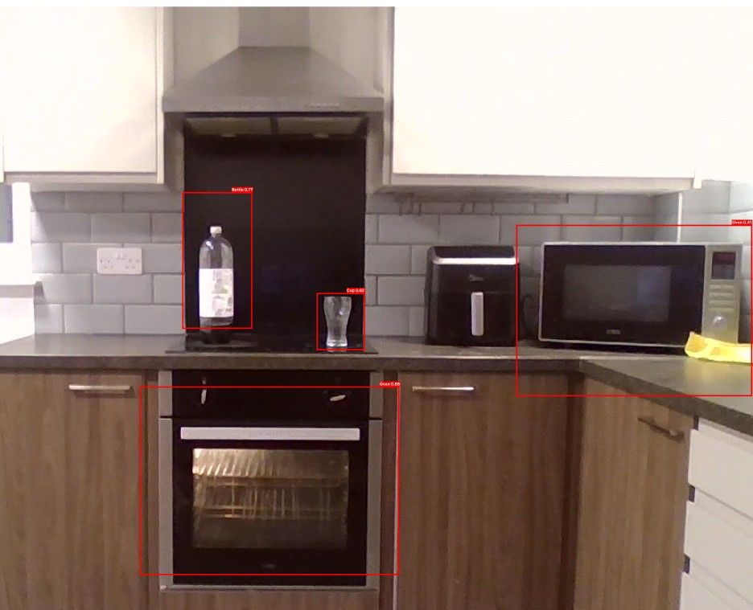

Autonomous Motor Claim Triaging

During my internship, I engineered a robust data pipeline using Google Cloud for ML training and LLM fine-tuning. I contributed to a full-stack claims summariser and an autonomous triaging system using Python, TensorFlow, and Flask.
Smart IoT Home Device

Lead Authored project, fot a cusotmisable IoT smart home system using Raspberry Pi. The system allows ysers to customise to their requiremnts, and offers differign widegt support for weather, news and more.
Assistive Care Device for Dementia

An AI-powered IoT system that uses computer vision to detect kitchen appliance usage and prevent fire hazards for vulnerable individuals. It triggers real-time audible and haptic notifications through a wearable wristband.
Fraud Detection Classifier

A supervised machine learning model using an ensemble Random Forest classifier to accurately identify fraudulent financial transactions within highly imbalanced datasets.
Predictive Analytics Dashboard

A data visualization dashboard that utilizes machine learning models to predict future trends from historical data. Developed using Python, Flask for the backend, and React with Chart.js for the frontend.
Pong AI Evolution

An autonomous AI agent trained to play Pong using the NEAT (NeuroEvolution of Augmenting Topologies) machine learning algorithm.
Agentic Comedic Chatbot

A full-stack web application featuring an intelligent conversational agent. Built with React and Node.js, it integrates with a Large Language Model API to provide advanced natural language processing capabilities.